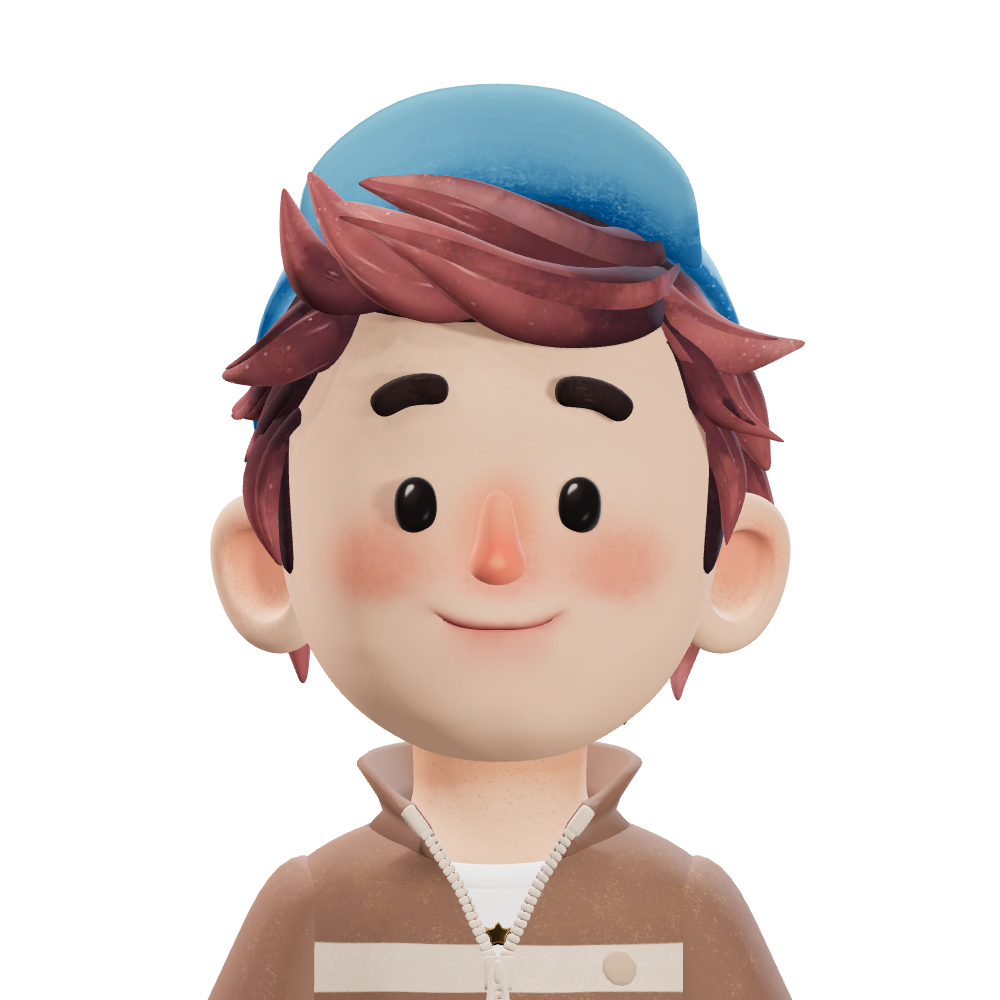

InspiGraphie
Initialement orienté vers les réseaux et l’informatique (BUT R&T), j’ai choisi de me diriger vers la production graphique en intégrant un BTS ERPC à Clermont-Ferrand.
Sous le pseudonyme InspiGraphie, je combine ma rigueur technique et ma créativité numérique pour concevoir des visuels percutants. Mon objectif est de fusionner mes compétences en programmation et en design pour offrir des solutions de communication modernes et innovantes.
